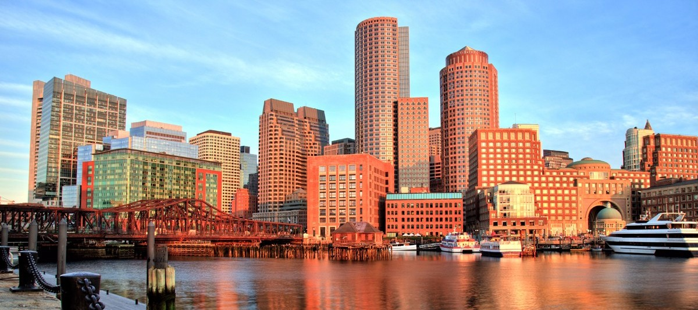

Los 6 Mayores
El Abbott World Marathon Majors es una serie compuesta por seis de los maratones más grandes y famosos del mundo. Las carreras tienen lugar en Tokio, Boston, Londres, Berlín, Chicago y Nueva York.

Boston
Desde 1897, se corre el tercer lunes de abril.
Desde 1981, se corre el último domingo de abril.